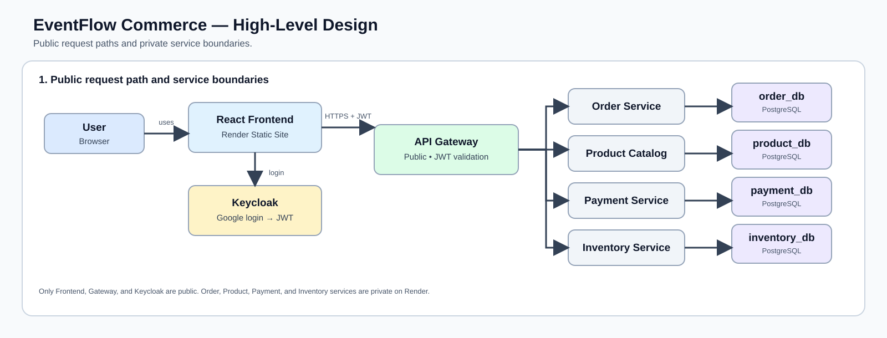
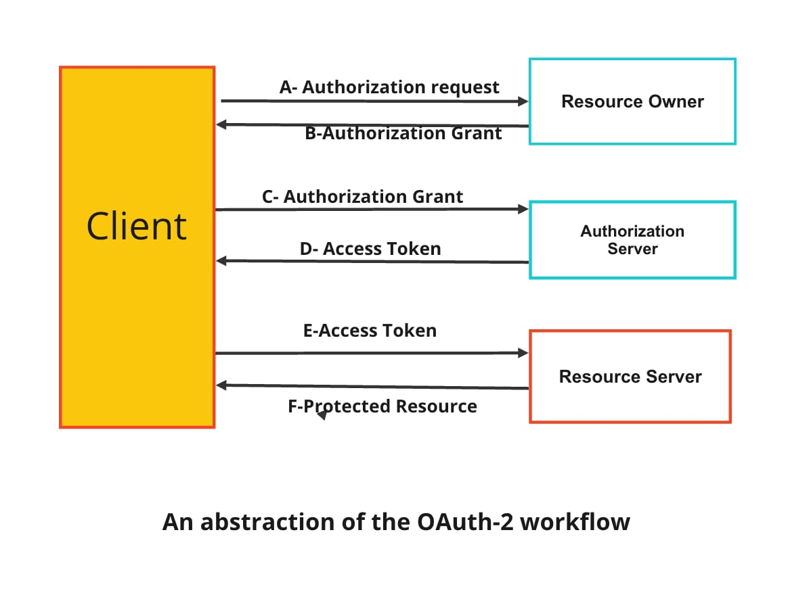

High-Level Design
1. What is EventFlow Commerce?
It is an event-driven e-commerce platform. A React frontend sends requests to a Spring Boot API gateway. Independent Java services manage orders, inventory, products, and payments. Kafka carries business events between services, while PostgreSQL stores each service's data.

2. Why use microservices instead of one large application?
Each business capability is isolated: orders, inventory, products, and payments can be deployed or changed independently. The trade-off is more deployment, networking, and observability complexity. For a small project, this architecture is used to demonstrate distributed-system design.
3. What does the API Gateway do?
The gateway is the single public backend entry point. It routes /api/v1/orders/** to Order Service, product requests to Product Catalog, and so on. It also validates JWTs, handles CORS, and applies a request-rate limit before requests reach private services.
EventFlow security flow: the API Gateway is publicly reachable, but that does not mean every route is public.
POST /api/v1/ordersis protected and requires the user's Keycloak JWT.- The gateway acts as an OAuth2 Resource Server. It verifies the token's signature with Keycloak's public signing keys and validates its issuer and expiry time.
- A missing, invalid, expired, or forged token is rejected with
401 Unauthorizedbefore the request reaches Order Service. - Order Service validates the JWT again and requires the
orders.writescope. This defense-in-depth check protects the service even if gateway routing or network configuration is changed incorrectly. - Order, Inventory, Payment, and Product services use Render's private network, so internet clients cannot call them directly. Public backend traffic must enter through the gateway.
- Product catalogue routes are intentionally public so users can browse products before signing in.
/healthand API-documentation routes are also public for Render health monitoring and developer access. In production, documentation access can be restricted if required.
Public client
|
v
API Gateway (public + JWT validation)
|
v
Order Service (private + JWT validation + orders.write scope)Interview summary: public reachability and public authorization are different. The gateway can be reachable from the internet while Spring Security still protects selected routes, and private services add their own authorization checks rather than trusting network location alone.
Spring Boot and Java Layers
4. What is Spring Boot?
Spring Boot is an opinionated extension of the Spring Framework that makes it faster to create stand-alone, production-ready Java applications. It reduces manual configuration by providing sensible defaults while still allowing those defaults to be overridden.
Its main features are:
- Auto-configuration: configures beans automatically based on the dependencies on the classpath. For example, adding the web starter configures Spring MVC, JSON conversion, validation, and an embedded server.
- Starter dependencies: packages compatible libraries for common use cases, such as
spring-boot-starter-web,spring-boot-starter-data-jpa, andspring-boot-starter-security. - Embedded server: applications can run directly with an embedded Tomcat, Jetty, or Undertow server instead of deploying a WAR file to an external server.
- Externalized configuration: environment-specific settings can come from
application.properties, YAML, environment variables, command-line arguments, and profiles. - Production support: Spring Boot Actuator provides health checks, metrics, environment information, and observability endpoints.
- Spring ecosystem integration: it works with Spring MVC, WebFlux, Data JPA, Security, Kafka, testing tools, and dependency injection.
@SpringBootApplication
public class Application {
public static void main(String[] args) {
SpringApplication.run(Application.class, args);
}
}@SpringBootApplication combines @Configuration, @EnableAutoConfiguration, and @ComponentScan. SpringApplication.run() creates the application context, discovers components, applies auto-configuration, and starts the embedded server.
Spring vs Spring Boot: Spring is the broader framework that provides features such as dependency injection, MVC, data access, and security. Spring Boot builds on Spring and simplifies application setup, dependency management, configuration, execution, and production monitoring. It does not replace Spring.
Interview summary: Spring Boot helps developers focus on business logic by minimizing boilerplate configuration and providing a consistent way to build, run, test, and monitor Spring applications.
5. What are controller, service, repository, and entity layers?
- Controller: receives HTTP requests and returns HTTP responses.
- Service: contains business rules, such as creating an order or reserving inventory.
- Repository: reads and writes database records through Spring Data JPA.
- Entity: a Java class mapped to a PostgreSQL table.
HTTP request → Controller → Service → Repository → PostgreSQL
6. What does dependency injection mean?
Spring creates and supplies required objects instead of classes manually creating them with new. For example, Order Service receives its repository and Kafka publisher through its constructor. This reduces coupling and makes testing easier.
7. What does @Transactional do?
It groups database operations into one atomic unit of work. If an operation fails, Spring rolls back the transaction instead of leaving partial database changes. It is important when updating an order status after a business event.
Kafka and the Order Workflow
8. What is Apache Kafka?
Apache Kafka is a distributed event-streaming platform designed for high-throughput, fault-tolerant, real-time data processing.
A service publishes events to a named topic, and other services consume those events when ready. Kafka stores events durably, distributes topic partitions across brokers, and replicates data for resilience. This lets services communicate asynchronously without directly calling or waiting for one another.
Learn more: Apache Kafka — GeeksforGeeks
9. What are producers, consumers, topics, and consumer groups?
- Producer: sends an event, for example Order Service.
- Topic: named stream of events, such as
orders.created.v1. - Consumer: reads events, for example Inventory Service.
- Consumer group: allows multiple copies of one service to share message processing work safely.
10. How does an order become paid?
-
User signs in.
Frontend → Keycloak/Google → JWT access token.
The frontend sends this token with protected API requests. The API Gateway verifies that the token is legitimate before forwarding the request. -
User creates an order.
Frontend → API Gateway → Order Service.- Order Service creates an order in
order_dbwith statusPENDING_INVENTORY. PENDING_INVENTORYmeans that the order exists, but stock has not yet been confirmed.- In the same database transaction, it saves an unpublished
orders.created.v1event inoutbox_events.
- Order Service creates an order in
-
Why use
outbox_events?
Sending directly to Kafka after saving the order is simpler, but Kafka could be temporarily unavailable after the database save succeeds. The order would then exist while Inventory Service would never receive its event. Saving the order and event in one transaction ensures that either both are saved or neither is saved. -
The order event is published.
OutboxPublisherruns every second. It reads unpublished rows fromoutbox_events, sends them to the Kafka topicorders.created.v1, and then marks them as published. -
Inventory is reserved.
Inventory Service consumesorders.created.v1.- It reduces
available_quantityand increasesreserved_quantityininventory_db. - For an order of one unit,
available: 50, reserved: 0becomesavailable: 49, reserved: 1. - It publishes
inventory.reserved.v1, orinventory.reservation-failed.v1when stock is insufficient. - It stores the Kafka
eventIdinprocessed_eventsso that a duplicate delivery cannot reserve stock twice.
- It reduces
-
Order status is updated and payment begins.
Order Service and Payment Service consumeinventory.reserved.v1using separate Kafka consumer groups.- Order Service changes the status from
PENDING_INVENTORYtoINVENTORY_RESERVED. - Payment Service creates a Razorpay test checkout order and stores a pending payment in
payment_db.
- Order Service changes the status from
-
The user completes the Razorpay payment.
The frontend opens Razorpay Checkout. After payment, Payment Service verifies Razorpay's signature, preventing a client from falsely claiming that a payment succeeded.- Payment Service marks the payment as
PAID. - It publishes
payments.completed.v1.
- Payment Service marks the payment as
-
The order becomes paid.
Order Service consumespayments.completed.v1and changes the order status toPAID. Inventory's reserved count is finalized, so the sold unit remains removed from available stock. The frontend polls the order endpoint and displays Paid.
11. What is eventual consistency?
An order is saved before inventory and payment are complete, so the system is not immediately consistent everywhere. Its status changes as later Kafka events arrive: Pending Inventory → Inventory Reserved → Paid. This is normal in event-driven microservices.
12. What is the outbox pattern used by Order Service?
The order and its outgoing event are stored together in the Order Service database. A publisher later sends the stored event to Kafka. This reduces the risk of saving an order successfully but losing the event because Kafka was temporarily unavailable.
Authentication and Security
13. What is Keycloak?
Keycloak is an identity and access-management server. It manages user accounts, login pages, Google OAuth integration, roles, scopes, and JSON Web Tokens. Your application does not store users' Google passwords.
Keycloak maintains one identity for each user and can link that identity to multiple authentication methods or external identity providers, such as a username and password, Google, Microsoft, or another OpenID Connect/SAML provider. The user can therefore sign in through different supported methods while the application continues to recognize the same account.
14. What are OAuth 2.0, OpenID Connect, and JWT?
OAuth 2.0 is the industry-standard delegated-authorization framework. It allows a third-party application to obtain limited access to a user's protected resources on an HTTP service—such as Google or GitHub—without exposing the user's login credentials to that application. Instead of sharing the user's password, OAuth uses access tokens that are normally short-lived and restricted by permissions called scopes.
An access token is a credential used to call an API. It may be a cryptographically signed structured token such as a JWT or an opaque, securely generated random value. OAuth 2.0 defines authorization delegation; it does not itself define user authentication.
OAuth 2.0 participants
- Resource Owner: the user who owns the protected data—for example, a user who owns a Google profile.
- Client: the application requesting limited access—for example, a job portal requesting permission to read the user's basic Google profile.
- Authorization Server: authenticates the user, obtains consent, and issues tokens—for example, Google Authorization Server or Keycloak.
- Resource Server: the API holding protected resources. It accepts the access token, validates it, and checks whether its scopes permit the requested operation.

Conceptual workflow shown above
- Authorization request: the client asks the resource owner for permission to access specific resources.
- Authorization grant: after authentication and consent, the client receives a grant representing the approved authorization.
- Token request: the client presents the authorization grant to the authorization server.
- Access token: the authorization server validates the client and grant, then issues a scoped access token.
- Protected-resource request: the client sends the access token to the resource server, normally as
Authorization: Bearer <token>. - Protected resource: after validating the token and required scopes, the resource server returns the permitted data.
Modern browser/mobile flow: applications normally use Authorization Code Flow with PKCE. The user is redirected to the authorization server, so the client never receives or handles the user's Google, GitHub, or Keycloak password. The authorization code is exchanged for tokens, and PKCE prevents a stolen code from being redeemed without the original verifier.
OAuth 2.0 vs OpenID Connect vs JWT
- OAuth 2.0: answers, “What is this client allowed to access?” It provides delegated authorization through access tokens and scopes.
- OpenID Connect (OIDC): adds authentication and identity on top of OAuth 2.0. It introduces an
id_tokenthat tells the client who authenticated. - JWT: is a compact token format, not an authorization protocol. A JWT contains signed claims such as issuer, subject, audience, expiry, roles, and scopes. OAuth access tokens and OIDC ID tokens may use JWT format, but OAuth also supports opaque access tokens.
In EventFlow, Keycloak acts as the authorization/OpenID provider. The frontend obtains tokens using Authorization Code Flow with PKCE. The API Gateway and Order Service act as OAuth 2.0 Resource Servers: they validate the access token's signature, issuer, audience, and expiry, then enforce scopes such as orders.write.
Interview answer: “OAuth 2.0 lets an application access a user's protected resources without receiving the user's password. The user authorizes specific scopes, the authorization server issues a limited access token, and the resource server validates that token before returning data. OpenID Connect adds login and identity through an ID token, while JWT is only one possible format used to represent tokens.”
15. What is PKCE and why does the React frontend use it?
PKCE protects the OAuth authorization-code flow for browser applications. The frontend creates a temporary secret, sends only a derived challenge during login, and proves it later when redeeming the authorization code. It helps prevent intercepted login codes from being used by an attacker.
Notifications
16. How do push notifications work with Firebase, and how can you build your own notification service?
1. Push notifications with Firebase Cloud Messaging (FCM)
Your application identifies a person with its own userId. When the user opens your browser or mobile app, the client registers with Firebase Cloud Messaging (FCM) and receives an FCM registration token.
userId → FCM registration token
Your backend stores this mapping. Later, when it needs to notify that user, it finds the token and sends the message to FCM.
Your Backend → FCM → Browser / Android / iOS
FCM uses the token to identify a particular app installation or browser endpoint. It does not identify the user, and the token is not an IP address. The user's IP or network can change without affecting your stored mapping.
The main benefit is background delivery: FCM can use the browser, Android, or iOS push infrastructure even when the app is not actively connected to your server.
2. Building your own real-time notification service
For live notifications inside an open app, you can keep a persistent WebSocket connection between each client and your own notification service.
Browser/App ⇄ WebSocket ⇄ Your Notification Service
userId → active connection
When another application service creates an event, it asks Notification Service to notify a user. The service finds that user's active connection and sends the message directly.
Application Service → Notification Service → active WebSocket → Browser/App
If you run multiple notification-server instances, Redis Pub/Sub can share messages between them. This lets the instance that owns the user's connection deliver the notification.
3. Important limitation
Your own WebSocket service works only while the client remains connected. It cannot reach a closed browser or disconnected app. For background or operating-system-level push notifications, use FCM, APNs, or Web Push.
Simple rule: use WebSockets for instant updates while a user is online; use Firebase/FCM when a notification must reach them outside the active app session.
Data and Deployment
17. Why does each service have its own PostgreSQL database?
This is called database per service. Order Service owns order_db, Inventory Service owns inventory_db, and so on. Services communicate changes with Kafka events instead of directly modifying another service's tables.
18. What are Docker and Render used for?
Docker packages each Java service with its runtime and dependencies into a reproducible container image. Render builds and runs those containers, hosts the React static site, provides private networking and PostgreSQL databases, and supplies configuration through environment variables.
19. What is Aiven's role?
Aiven hosts the managed Kafka cluster. The services connect securely using SASL over SSL. Aiven stores the Kafka topics and delivers events between Order, Inventory, and Payment Services.
20. What is intentionally not included?
Redis is not deployed; the gateway's limiter is in-memory and suitable for one instance. Production log aggregation in Grafana is also not configured. Razorpay uses test-mode credentials. These are reasonable future improvements, not blockers for the current project.
Concurrency in Microservices
21. How would you handle concurrency in a microservice architecture?
I would handle concurrency at the smallest boundary that owns the data instead of trying to create one distributed lock for the entire system.
- Protect each service's database: use short transactions, unique constraints, and atomic conditional updates. In Spring Boot/JPA, optimistic locking with a
@Versionfield is a good default when concurrent updates are possible; retry or return a conflict when the version has changed. - Make operations idempotent: attach an idempotency key or event ID to requests and messages, store processed IDs, and ensure retries cannot create duplicate orders, payments, or inventory reservations.
- Serialize related events: publish Kafka events using the business entity ID, such as
orderId, as the partition key. Events for the same entity then remain ordered within one partition, while unrelated entities can be processed concurrently. - Use safe messaging patterns: combine local database changes and outgoing events with the transactional outbox pattern. Consumers should acknowledge messages only after successful processing and use bounded retries plus a dead-letter topic for repeated failures.
- Coordinate multi-service workflows: use a Saga with compensating actions rather than a transaction spanning several service databases. For example, release reserved stock if payment fails.
- Use distributed locks sparingly: Redis or database locks can protect rare cross-instance critical sections, but require timeouts and ownership tokens. Prefer database constraints, partitioning, or idempotency because locks add failure modes and reduce throughput.
- Control load: scale stateless service instances horizontally, use bounded thread/connection pools, rate limiting, timeouts, circuit breakers, and backpressure so a traffic spike does not exhaust downstream services.
Interview example: if two users try to buy the last item, Inventory Service performs an atomic update such as UPDATE inventory SET quantity = quantity - 1 WHERE product_id = ? AND quantity > 0. Only one update succeeds. The reservation event is processed idempotently, and if payment later fails, the Saga releases the stock.
Key point: concurrency is controlled through data ownership, atomic updates, optimistic locking, message ordering, idempotency, and failure recovery—not by assuming a message will be delivered only once.
Production Scenarios and System Design
23. What would you do if the latest database backup were corrupted?
I would not overwrite production or immediately restore an unverified backup. First, I would declare an incident, stop the backup-retention process from deleting older recovery points, identify the corruption window, and preserve database logs and evidence.
- Choose a clean recovery point: verify checksums and restore the newest known-good full backup into an isolated environment.
- Recover newer changes: replay incremental backups or PostgreSQL WAL archives to perform point-in-time recovery to just before the corruption occurred.
- Validate: run integrity checks, compare important row counts and business totals, execute application smoke tests, and have data owners verify critical records.
- Restore service safely: switch traffic only after validation, reconcile any writes made after the recovery point from durable events or audit logs, and closely monitor the system.
- Prevent recurrence: determine whether the cause was storage failure, bad backup configuration, or logical corruption. Keep multiple generations and an off-site copy, use immutable retention where possible, alert on failed checksum checks, and regularly perform automated restore drills.
Key point: a backup is trustworthy only after it has been successfully restored and validated. Recovery objectives such as RPO (acceptable data loss) and RTO (acceptable downtime) determine which recovery strategy to use.
24. How would you debug a PostgreSQL query that takes five seconds?
- Capture the exact query: include its real parameters and execution frequency. Use Spring/Hibernate metrics,
pg_stat_statements, and slow-query logging rather than guessing from one local run. - Inspect the plan: run
EXPLAIN (ANALYZE, BUFFERS)in a safe environment. Look for sequential scans on large tables, inaccurate row estimates, expensive sorts, nested loops processing many rows, disk reads, and temporary-file usage. - Check indexes: ensure columns used by selective
WHERE,JOIN, andORDER BYclauses have suitable indexes. Consider a composite or partial index based on the access pattern, but avoid adding unused indexes because they slow writes. - Check query and data shape: return only required columns and rows, avoid N+1 queries from JPA, paginate large results, simplify unnecessary joins, and check for table bloat or stale statistics. Run
ANALYZEor review autovacuum health when estimates are wrong. - Check waiting: determine whether the five seconds is execution time or time waiting for a lock, connection, CPU, memory, or disk I/O. Inspect
pg_stat_activity, blocking sessions, connection-pool metrics, and system resources. - Verify the improvement: compare plans and latency under production-like data and concurrency, then monitor p95/p99 latency after deployment.
EXPLAIN (ANALYZE, BUFFERS)
SELECT id, status
FROM orders
WHERE customer_id = 42
ORDER BY created_at DESC
LIMIT 20;Interview point: I would optimize from evidence in the execution plan. “Add an index” is not always the answer—the query may actually be blocked, returning too much data, suffering from an ORM N+1 problem, or using stale planner statistics.
25. How would you design an e-commerce system?
I would begin with requirements and scale: browsing and search are read-heavy, while inventory and payment require correctness. I would then split the system by business capability rather than creating a service for every table.
Client → CDN / Load Balancer → API Gateway
├→ Product Service → Product DB / Search Index
├→ Cart Service → Redis
├→ Order Service → Order DB
├→ Inventory Service → Inventory DB
├→ Payment Service → Payment Provider
└→ User / Notification Services
Order, inventory, payment and notification events ↔ Kafka
- Catalog and search: cache popular products and images through a CDN; use a search index for text, filtering, and ranking.
- Cart: keep active carts in Redis for low latency and persist them when durability or recovery is required.
- Checkout: create an order with a price snapshot, atomically reserve inventory, and call the payment provider with an idempotency key.
- Consistency: use a Saga for the order workflow. If payment fails, release inventory; if confirmation fails temporarily, retry safely. Use the outbox pattern to avoid losing events after a database commit.
- Data ownership: each service owns its data. Strong consistency is used inside inventory and payment boundaries; catalog views and order-status projections can be eventually consistent.
- Reliability and security: add timeouts, bounded retries with jitter, circuit breakers, dead-letter topics, rate limiting, authentication and authorization, encrypted secrets, audit logs, metrics, traces, and alerts.
- Scaling: keep services stateless where possible, scale hot services independently, partition Kafka by entity ID, add read replicas when appropriate, and prevent overselling with conditional inventory updates.
Key point: I would first build a modular system with clear domain boundaries and extract independently scalable services only when scale or team ownership justifies the added operational complexity.
26. What happens if Kafka fails before a message or consumer offset is committed?
The result depends on which commit failed:
- Producer failure before Kafka acknowledges the record: the producer may not know whether Kafka stored it. Retrying can duplicate the event unless the producer is idempotent and the consumer also handles duplicate event IDs.
- Database commits but event publication fails: the business data exists but no event is sent. Use the transactional outbox pattern: store the business change and outbox row in one database transaction, then keep retrying publication.
- Consumer processes the event but crashes before committing its offset: Kafka delivers that event again after restart or rebalance. This gives at-least-once delivery, so the consumer must be idempotent—for example, store the event ID with a unique constraint in the same transaction as the business update.
- Consumer commits the offset before processing finishes: a crash can lose the work because Kafka considers the record consumed. Therefore, commit the offset only after successful processing; in Spring Kafka, configure manual or record-based acknowledgement when the workflow requires it.
Use retries with backoff for temporary errors and send repeatedly failing records to a dead-letter topic. Kafka transactions can atomically combine consumed offsets with records produced back to Kafka, but they do not make a Kafka write and an external PostgreSQL transaction globally atomic.
Interview answer: “If processing finishes but the offset is not committed, Kafka will redeliver the record. I design for that using at-least-once delivery, idempotent consumers, unique event IDs, and offset acknowledgement after the database transaction succeeds. For the database-to-Kafka gap, I use the outbox pattern.”
Java Fundamentals
27. What is the difference between HashMap and Hashtable?
| Area | HashMap | Hashtable |
|---|---|---|
| Thread safety | Not synchronized | Methods are synchronized |
| Nulls | Allows one null key and multiple null values | Allows neither null keys nor null values |
| Performance | Usually faster without synchronization overhead | Usually slower because every operation is synchronized |
| API status | Modern Collections Framework class | Legacy class |
| Iteration | Uses fail-fast iterators | Supports legacy Enumeration and iterators |
For concurrent access, prefer ConcurrentHashMap rather than Hashtable; it provides better concurrency and atomic operations such as computeIfAbsent.
28. What is Java, and why is it platform independent?
Java is a strongly typed, object-oriented programming language and runtime platform. The Java compiler converts source code into platform-neutral bytecode. A JVM built for Windows, Linux, or macOS executes the same bytecode, which gives Java its “write once, run anywhere” behavior.
Java is therefore platform independent at the bytecode level; the JVM implementation itself is platform specific.
29. What is the difference between JVM, JRE, and JDK?
- JVM: executes Java bytecode and manages memory, garbage collection, class loading, and JIT compilation.
- JRE: the JVM plus standard libraries and files needed to run Java applications.
- JDK: the JRE/runtime plus development tools such as
javac,jar,javadoc, and debuggers.
In short: JDK is used to develop and run; the runtime is used to run; the JVM executes the bytecode.
30. What is method overloading and method overriding?
Overloading means methods in the same class have the same name but different parameter lists. It is resolved at compile time; changing only the return type is not enough.
Overriding means a subclass supplies a new implementation with the same compatible signature as an inherited method. It is selected at runtime through dynamic dispatch. Use @Override so the compiler can validate it.
class Printer {
void print(String value) {} // overloaded
void print(String value, int n) {}
}
class Animal { void speak() {} }
class Dog extends Animal {
@Override void speak() { System.out.println("Bark"); }
}31. What are the four pillars of OOP?
- Encapsulation: keep state and behavior together and control access through a class's API.
- Abstraction: expose essential behavior while hiding implementation details, often through interfaces.
- Inheritance: derive a class from another class to reuse or specialize behavior.
- Polymorphism: use one interface or parent type with multiple implementations selected at runtime.
In production code, composition is often preferred over deep inheritance because it creates looser coupling.
32. How many data types are there in Java, and what are they?
Java types fall into two categories. There are exactly eight primitive types: byte, short, int, long, float, double, char, and boolean. Reference types include classes, interfaces, arrays, enums, records, and String.
Primitives store their values directly and cannot be null. Reference variables hold references to objects and may be null.
33. Which Java data structure stores elements in insertion order?
It depends on the required behavior: ArrayList and LinkedList preserve list order, LinkedHashSet preserves insertion order while removing duplicates, and LinkedHashMap preserves key insertion order. A plain HashSet or HashMap does not guarantee insertion order.
34. What is shallow cloning versus deep cloning?
A shallow copy creates a new outer object but copies references to nested mutable objects. Changing nested state through one copy is visible through the other. A deep copy recursively creates independent copies of mutable nested objects, so the two object graphs can change independently.
Java's default Object.clone() is shallow and its API is error-prone. Prefer explicit copy constructors, factory methods, immutable value objects, or mapping code. Deep copying costs more CPU and memory and must define how cycles and shared references are handled.
35. Explain multithreading concepts such as race conditions and deadlocks.
A race condition occurs when multiple threads access shared mutable state and the result depends on timing—for example, two threads read the same stock value and both decrement it. Prevent it with immutability, atomic operations, synchronization, database constraints, or by avoiding shared state.
A deadlock occurs when threads wait forever for locks held by each other. Prevent it by using a consistent lock order, keeping critical sections short, avoiding nested locks, and using timed lock acquisition where appropriate.
Also watch for starvation, livelock, visibility problems, and thread-pool exhaustion. In Spring services, thread safety includes singleton bean fields: request-specific mutable state should not be stored in singleton services.
Spring, Security, and Testing
36. Explain Dependency Injection and Inversion of Control in Spring.
Inversion of Control (IoC) is the broader principle that object creation and lifecycle control move from application classes to a container. Dependency Injection (DI) is how Spring implements IoC: the container creates beans and supplies their required collaborators.
@Service
class OrderService {
private final OrderRepository repository;
OrderService(OrderRepository repository) {
this.repository = repository;
}
}Constructor injection is preferred because dependencies are explicit, can be final, and are easy to replace in tests. It reduces coupling and avoids hidden or partially initialized dependencies.
37. What is Spring Security, and how does it handle authentication and authorization?
Spring Security is Spring's framework for securing applications. Its filter chain intercepts requests before controllers. Authentication establishes who the caller is; authorization decides whether that authenticated caller may access a resource.
For a JWT API, a bearer-token filter validates the token's signature, issuer, audience, and expiry, converts claims or roles into authorities, and stores an Authentication in the SecurityContext. URL rules such as requestMatchers(...).hasRole(...) and method annotations such as @PreAuthorize enforce authorization. Invalid identity normally returns 401; insufficient permission returns 403.
Spring Security also provides defenses and integrations for sessions, CSRF, CORS, password hashing, OAuth 2.0, and OpenID Connect.
38. What roles do JUnit and Mockito play in unit testing?
JUnit is the testing framework: it provides @Test, lifecycle hooks, assertions, parameterized tests, and test execution. Mockito creates mocks or spies for collaborators and lets a test stub responses and verify interactions.
@ExtendWith(MockitoExtension.class)
class OrderServiceTest {
@Mock OrderRepository repository;
@InjectMocks OrderService service;
@Test
void returnsOrder() {
when(repository.findById(1L)).thenReturn(Optional.of(new Order()));
assertNotNull(service.find(1L));
verify(repository).findById(1L);
}
}Mock external boundaries, not the class under test. A unit test should remain fast and isolated; database, HTTP, and full-context behavior belongs in integration tests.
39. Which annotation is used for integration testing in Spring Boot?
@SpringBootTest is the common answer because it loads the full Spring application context. Combine it with JUnit's @Test; use webEnvironment when testing over HTTP and @Transactional when a database test should roll back afterward.
Use smaller test slices when a full context is unnecessary: @WebMvcTest for MVC controllers and @DataJpaTest for JPA repositories. Testcontainers can provide a real PostgreSQL or Kafka dependency for realistic integration tests.
40. Which annotation is used for unit testing in Spring Boot?
The test method uses JUnit's @Test. A pure unit test normally does not start Spring; use @ExtendWith(MockitoExtension.class) when Mockito annotations such as @Mock and @InjectMocks are needed. @SpringBootTest is not a unit-test annotation because it loads the application context and makes the test an integration test.
41. What is JDBC used for?
JDBC is Java's standard API for connecting to relational databases, executing parameterized SQL, reading result sets, managing transactions, and calling stored procedures. A JDBC driver translates those calls into the database's protocol.
Spring's JdbcTemplate reduces JDBC boilerplate, while JPA/Hibernate provides a higher-level object-relational abstraction. Use prepared statements or framework parameters rather than concatenating user input into SQL.
42. What is @SpringBootApplication used for?
It marks the main Spring Boot configuration class and combines three annotations: @Configuration, @EnableAutoConfiguration, and @ComponentScan. It enables bean definitions, configures the application based on dependencies and properties, and scans the package containing the main class and its subpackages for components.
Place the main class in a sensible root package so controllers, services, and repositories are discovered.
43. What is the default implementation class of JpaRepository?
Spring Data JPA creates a runtime proxy for the repository interface, and its standard backing implementation is SimpleJpaRepository. You normally declare only the interface; Spring supplies the proxy, query implementation, transaction behavior, and delegates base CRUD operations to SimpleJpaRepository.
44. Explain JWT and how it works.
A JWT is a compact token containing a Base64URL-encoded header, payload, and cryptographic signature: header.payload.signature. After login, the authorization server signs a token containing claims such as subject, roles, issuer, audience, and expiry. The client sends it in Authorization: Bearer <token>.
The resource server verifies the signature and validates claims before trusting the identity and permissions. A signed JWT is not encrypted—its payload can be read—so secrets must not be stored in it. Use short expirations, HTTPS, validated algorithms and keys, and a safe refresh-token strategy. Logout or immediate revocation requires additional state or short-lived access tokens.
SQL and Data Modeling
45. How do you create a schema in SQL?
A schema is a namespace that groups database objects and separates ownership or domains.
CREATE SCHEMA commerce AUTHORIZATION app_user;
CREATE TABLE commerce.orders (
id BIGINT GENERATED ALWAYS AS IDENTITY PRIMARY KEY,
customer_id BIGINT NOT NULL,
status VARCHAR(30) NOT NULL,
created_at TIMESTAMP NOT NULL DEFAULT CURRENT_TIMESTAMP
);
GRANT USAGE ON SCHEMA commerce TO reporting_user;
GRANT SELECT ON ALL TABLES IN SCHEMA commerce TO reporting_user;Run schema changes through versioned migrations such as Flyway or Liquibase rather than manually changing production.
46. How do you model one-to-one, one-to-many, and many-to-many relationships?
- One-to-one: place a foreign key with a
UNIQUEconstraint on one table, such asprofiles.user_id UNIQUE REFERENCES users(id). - One-to-many: place the foreign key on the “many” table, such as
orders.customer_id REFERENCES customers(id). - Many-to-many: create a junction table such as
product_category(product_id, category_id)with both foreign keys and usually a composite primary key.
In JPA these map to @OneToOne, @OneToMany/@ManyToOne, and @ManyToMany. Define the owning side, fetch strategy, cascade rules, and deletion behavior carefully. If a many-to-many relationship has attributes such as quantity or created date, model the junction row as its own entity.
47. What is a DBMS, and how is it different from an RDBMS?
A DBMS is any software that stores, retrieves, secures, and manages data. An RDBMS is a DBMS based on the relational model: data is organized into tables related through keys, queried commonly with SQL, and protected using constraints and transactions.
Therefore every RDBMS is a DBMS, but not every DBMS is relational. PostgreSQL and MySQL are RDBMS products; document, key-value, graph, and time-series databases are other DBMS categories.
APIs, Tools, and DevOps
48. What is a Docker container?
A container is an isolated running instance of a container image. The image packages an application, runtime, libraries, and configuration defaults; the container adds a writable runtime layer. Containers share the host OS kernel, so they are generally lighter and start faster than virtual machines.
Containers should be disposable and mostly stateless. Persist data in volumes or external services, inject secrets at runtime, run as a non-root user, set resource limits and health checks, and build small pinned images.
49. Explain Azure CI/CD pipelines.
Azure Pipelines automates build, test, packaging, and deployment from a repository. A YAML pipeline defines triggers, stages, jobs, and steps.
- CI: a pull request or commit triggers checkout, dependency restore, compilation, unit/integration tests, static analysis, and creation of a versioned JAR or container image.
- Artifact publishing: publish the verified artifact to Azure Artifacts or push the image to Azure Container Registry.
- CD: deploy the same immutable artifact through dev, test, staging, and production environments.
- Controls: use service connections, Key Vault-backed secrets, environment approvals, automated smoke tests, health checks, and rolling or blue-green deployment with rollback.
The important principle is to build once, promote the same artifact, keep secrets outside YAML, and block deployment when quality checks fail.
50. Explain Azure Git version control.
Azure Repos provides hosted Git repositories. Git is distributed: developers clone the repository, commit locally, push branches, and open pull requests into protected branches such as main.
A typical workflow uses short-lived feature branches, meaningful commits, pull-request reviews, linked work items, and branch policies requiring a successful build, tests, approvals, and resolved comments. Releases should use immutable tags such as v1.4.0. Git tracks source history; build artifacts and secrets belong in artifact registries and secret stores, not the repository.
51. How do you debug HTTP errors in REST APIs?
- Reproduce the exact method, URL, headers, body, identity, environment, and timestamp; capture the status code and response.
- Use a correlation or trace ID to follow the request through the gateway and services. Check structured logs, metrics, and distributed traces without exposing credentials.
- Classify the result: 400 validation, 401 authentication, 403 authorization, 404 routing/resource, 409 state conflict, 429 rate limit, 5xx server or dependency failure.
- Check gateway routes, CORS or TLS, payload mapping, controller validation, exception stack traces, database calls, downstream timeouts, and recent deployments.
- Reproduce with a focused test, fix the root cause, add a regression test, and verify latency and error rates after release.
Return a consistent error body with a safe message, code, timestamp, and correlation ID; do not return internal stack traces to clients.
52. How and why do you use Postman?
I use Postman to call and inspect APIs independently of the frontend. It helps validate methods, parameters, JSON bodies, authentication tokens, headers, cookies, status codes, response schemas, and latency.
I organize requests into collections, use environments for base URLs and credentials, write pre-request scripts and assertions, chain values such as tokens between requests, and run collections as regression checks with the Postman CLI/Newman. Secrets should be kept in protected variables and not committed in exported collections.
53. How and why do you use Figma?
I use Figma to inspect user flows, layouts, component states, design tokens, spacing, typography, colors, and exported assets before implementing a UI. Dev Mode helps translate measurements and styles into React/CSS, while comments let developers and designers resolve ambiguous behavior.
I treat the design as a shared specification, not generated production code. I confirm responsive behavior, loading/empty/error states, accessibility, and reusable component boundaries, then compare the implementation with the design during review.
Production and Collaboration Scenarios
54. How would you debug a problem occurring in production?
I follow a stabilize–investigate–fix–learn process:
- Assess impact, declare the incident at the correct severity, assign ownership, and communicate a concise status.
- Mitigate first when users are affected: roll back a recent release, disable a feature flag, fail over, or scale safely. Avoid untested production edits.
- Use timestamps, correlation IDs, logs, metrics, traces, deployment history, dependency health, and resource graphs to narrow the failing component.
- Form and test one hypothesis at a time. Reproduce in a safe environment with production-like data while protecting sensitive information.
- Deploy the smallest reviewed fix, monitor technical and business signals, and keep a rollback ready.
- Write a blameless root-cause analysis and add tests, alerts, runbooks, or design changes that prevent recurrence.
55. How would you determine whether a microservice failed?
I would combine symptoms rather than trust one signal: readiness/liveness health checks, request error rate and latency, instance restarts, CPU/memory/thread/connection-pool saturation, dependency failures, Kafka consumer lag, queue depth, and business metrics such as orders stuck in one state.
I would trace a failed request using its correlation ID, check the API gateway and service logs, inspect distributed traces, compare the failure time with deployments or configuration changes, and test the service and its dependencies from inside the same network. A healthy process can still be functionally broken, so readiness checks should cover essential capability without making every optional dependency cause a restart loop.
56. As a backend engineer, how would you collaborate when the problem appears to be in React?
I would treat it as a shared product issue rather than hand it off based on team boundaries. First I would reproduce it and collect the browser console error, network request/response, payload, headers, user steps, environment, and correlation ID. I would verify the API contract and determine whether the frontend sent an invalid request, misunderstood a field, or received a backend response that violates the contract.
I would share a minimal reproduction and evidence with the frontend engineer, pair-debug if useful, and help fix either side. We would add contract tests or an OpenAPI-generated client, improve error handling, verify the complete user flow, and document the root cause. Ownership follows the fault, but responsibility for resolution is shared.
57. Give scenario-based examples related to your previous projects.
Answer with STAR: Situation, Task, Action, and Result. Use real metrics and never invent details. Possible examples from these projects are:
- EventFlow concurrency: two requests could reserve the last item. Explain the atomic inventory update, idempotent event handling, and how you verified that overselling stopped.
- Kafka reliability: a service could commit data but fail to publish its event. Explain implementing the outbox pattern, retry monitoring, and the resulting reduction in stuck orders.
- AgriQA evolution: adding languages and optional agricultural metadata made a rigid model costly. Explain the document model and indexes, then quantify delivery time or query improvement if you measured it.
- Production latency: trace a slow endpoint to an execution plan, N+1 query, missing index, or dependency; explain the fix and give before/after p95 latency.
End each story with what you learned and what safeguard you added.
58. How should you describe the organizational structure of your previous company?
Personalize this answer with facts: “The company was organized into [business units/products]. I worked in a cross-functional [team size]-person team containing [backend, frontend, QA, DevOps, product, design]. I reported to [role], worked with [stakeholders], and owned [services/features]. We planned through [Scrum/Kanban], reviewed code through pull requests, and coordinated releases with [team]. My individual responsibility was [specific ownership and result].”
Keep the focus on where you fit, who made decisions, how teams collaborated, and what you owned—not on drawing every reporting line.
59. What is the difference between a service-based and a product-based company?
A service-based company primarily earns revenue by delivering expertise or projects for clients. Scope, technology, deadlines, and priorities may vary by client, and engineers often gain exposure to multiple domains.
A product-based company primarily builds and operates its own product for a market. Teams usually have longer-term ownership of architecture, reliability, customer outcomes, and a product roadmap.
These are tendencies, not guarantees: service companies can own platforms and product companies can perform client work. A strong answer explains how your preferred environment matches the role without claiming one model is universally better.
60. Are you able to work independently?
“Yes. I can turn a defined outcome into smaller tasks, investigate unfamiliar areas, communicate risks early, make documented decisions, test my work, and carry it through deployment and monitoring. Independence does not mean working in isolation: I ask for clarification when a decision affects product scope, security, or another team, and I request review for high-risk changes. For example, [insert a real project where you independently owned a feature], resulting in [measurable result].”
61. What is the most recent certification you completed?
Use your real certification—do not invent one: “My most recent certification was [exact certification] from [issuer], completed in [month/year]. I learned [two relevant skills] and applied them by [real project example]. The most useful part for this role was [specific concept]. I am currently strengthening [next skill or certification].”
If you have not completed a certification, say so honestly: explain the course or structured learning you are currently doing and demonstrate the skill through a real project.
System Design and Coding
62. How would you redesign a hotel-booking system using microservices?
Client → API Gateway
├→ Identity Service
├→ Hotel/Catalog Service → Search Index
├→ Availability Service → Inventory DB
├→ Reservation Service → Booking DB
├→ Pricing Service
├→ Payment Service → Payment Provider
└→ Notification Service
Reservation lifecycle events ↔ Kafka
The main correctness problem is preventing double booking. Availability Service owns room inventory and performs an atomic conditional reservation for a room type and date range. Checkout creates a short-lived hold with an expiry, Payment Service charges using an idempotency key, and a Saga confirms the reservation or compensates by releasing the hold when payment fails or times out.
Hotel descriptions and search results can be cached and eventually consistent; availability, holds, and payments require stronger consistency. Each service owns its database, publishes changes through an outbox, and consumes events idempotently. Add rate limits, retries with jitter, circuit breakers, audit logs, distributed tracing, reconciliation jobs, and alerts for stuck reservations. Start with domain boundaries and split deployment only where independent scale or ownership warrants it.
63. Write a Java program to count how many times each character occurs in "Programming".
import java.util.LinkedHashMap;
import java.util.Map;
public class CharacterFrequency {
public static void main(String[] args) {
String str = "Programming";
Map<Character, Integer> counts = new LinkedHashMap<>();
for (char ch : str.toCharArray()) {
counts.merge(ch, 1, Integer::sum);
}
counts.forEach((ch, count) ->
System.out.println(ch + " = " + count));
}
}Output: P = 1 r = 2 o = 1 g = 2 a = 1 m = 2 i = 1 n = 1
LinkedHashMap keeps characters in their first-seen order. This solution is O(n) time and O(k) space, where k is the number of distinct characters. Convert to lowercase first if counting should be case-insensitive.
64. Write a selection sort algorithm in Java.
import java.util.Arrays;
public class SelectionSort {
static void sort(int[] values) {
for (int i = 0; i < values.length - 1; i++) {
int minIndex = i;
for (int j = i + 1; j < values.length; j++) {
if (values[j] < values[minIndex]) {
minIndex = j;
}
}
if (minIndex != i) {
int temp = values[i];
values[i] = values[minIndex];
values[minIndex] = temp;
}
}
}
public static void main(String[] args) {
int[] values = {64, 25, 12, 22, 11};
sort(values);
System.out.println(Arrays.toString(values));
}
}Selection sort repeatedly finds the smallest value in the unsorted portion and swaps it into the next position. Its time complexity is O(n²) in the best, average, and worst cases; it uses O(1) extra space and performs at most O(n) swaps. This implementation is not stable.
65. How would you implement an email notification service in Spring Boot?
I would keep email delivery outside the main business request. An Order or User service publishes an event such as OrderConfirmed to Kafka. A Notification Service consumes it, checks the user's notification preferences, renders a template, and sends the email through an SMTP server or provider such as Amazon SES or SendGrid.
Order Service → Kafka → Notification Service → Email Provider
├→ Template renderer
├→ Notification database
└→ Retry topic / dead-letter queue
In Spring Boot, add spring-boot-starter-mail, configure the SMTP credentials through environment variables or a secret manager, and inject JavaMailSender. Use MimeMessageHelper for HTML email and attachments:
@Service
public class EmailService {
private final JavaMailSender mailSender;
public EmailService(JavaMailSender mailSender) {
this.mailSender = mailSender;
}
public void send(String to, String subject, String html) {
MimeMessage message = mailSender.createMimeMessage();
try {
MimeMessageHelper helper = new MimeMessageHelper(message, true, "UTF-8");
helper.setTo(to);
helper.setSubject(subject);
helper.setText(html, true);
mailSender.send(message);
} catch (MessagingException exception) {
throw new EmailDeliveryException("Could not create email", exception);
}
}
}For production reliability, persist the business event with the transaction using the outbox pattern. Give every notification a unique ID and enforce a unique database constraint so retries cannot send duplicates. Retry temporary failures with exponential backoff and jitter, but send permanent failures such as an invalid address to a dead-letter queue for investigation.
- Templates: use Thymeleaf or provider-managed templates, version them, and keep dynamic values escaped.
- Security: keep credentials in a secret manager, validate recipients, avoid sensitive data in messages or logs, and use SPF, DKIM, and DMARC for the sending domain.
- User experience: respect opt-in preferences and unsubscribe rules; separate transactional emails from marketing emails.
- Monitoring: track accepted, delivered, bounced, rejected, retried, and dead-lettered messages; add correlation IDs, structured logs, metrics, and alerts.
- Testing: mock
JavaMailSenderin unit tests and use MailHog, GreenMail, or a provider sandbox for integration tests.
A small application can initially use @Async with JavaMailSender, but a durable queue is safer when an email must not be lost during a crash or deployment.
Java Collections and Ordering
66. What is the difference between Comparable and Comparator?
Comparable<T> | Comparator<T> |
|---|---|
| Defines a class's natural/default ordering. | Defines an external, custom ordering. |
The class itself implements compareTo(T other). | A separate object implements compare(T first, T second). |
| Normally provides one natural order. | Allows multiple orders without changing the class. |
Used by Collections.sort(list) or list.sort(null). | Passed to list.sort(comparator) or Collections.sort(list, comparator). |
Small example
class Employee implements Comparable<Employee> {
int id;
String name;
Employee(int id, String name) {
this.id = id;
this.name = name;
}
// Natural order: ascending id
@Override
public int compareTo(Employee other) {
return Integer.compare(this.id, other.id);
}
}
List<Employee> employees = new ArrayList<>();
employees.add(new Employee(2, "Rishav"));
employees.add(new Employee(1, "Aman"));
Collections.sort(employees); // Comparable: sort by id
// Custom order: alphabetical name
employees.sort(Comparator.comparing(employee -> employee.name));Custom Comparator class
class EmployeeNameComparator implements Comparator<Employee> {
@Override
public int compare(Employee first, Employee second) {
return first.name.compareToIgnoreCase(second.name);
}
}
// Use the custom comparator class
employees.sort(new EmployeeNameComparator());This keeps the name-sorting rule outside Employee. It is useful when the comparison has meaningful business logic, needs reuse in several places, or is too complex for a short lambda.
Interview rule: use Comparable when the type has one obvious natural order, such as an employee ID. Use Comparator when sorting rules vary—for example, by name, salary, or joining date. Comparator methods can also be chained:
employees.sort(
Comparator.comparing((Employee employee) -> employee.name)
.thenComparingInt(employee -> employee.id)
);Prefer Integer.compare(a, b) instead of a - b, because subtraction can overflow.
Spring AOP
67. What is Spring AOP, and how does it work?
Spring AOP (Aspect-Oriented Programming) is a core Spring module used to separate cross-cutting concerns—logic such as logging, security, caching, auditing, performance measurement, and transaction management that applies across many parts of an application but is not part of its primary business logic. This reduces duplication and keeps business code focused and maintainable.
Core terminology
- Aspect: a class that groups a cross-cutting concern, such as
LoggingAspect. - Join point: a point where an aspect may run. In Spring AOP, a join point is always a method execution.
- Pointcut: an expression that selects the method executions where advice should run.
- Advice: the action executed at a matched join point.
- Target object: the business object whose method is being advised.
- Weaving: linking an aspect to its target. Spring performs this at runtime by creating a proxy.
Types of advice
| Advice | When it runs |
|---|---|
@Before | Before the target method. |
@After | After the method finishes, whether it succeeds or throws an exception. |
@AfterReturning | Only after the method returns successfully. |
@AfterThrowing | Only when the method throws an exception. |
@Around | Surrounds the call and can run logic before and after it, alter the result, or skip execution. |
Example: manual logging vs AOP logging
With standard logging, each method contains its own log statements:
@Service
@Slf4j
public class UserService {
public void createUser(User user) {
log.info("Starting user creation for: {}", user.getName());
// Primary business logic
log.info("User created successfully");
}
}This is perfectly valid, but repeating the same start/end logging across many service methods creates boilerplate and can clutter the business logic.
With AOP, one aspect can apply that logging automatically to every matching service method:
@Aspect
@Component
public class LoggingAspect {
private static final Logger log =
LoggerFactory.getLogger(LoggingAspect.class);
// Matches every method in the service package
@Before("execution(* com.example.service..*(..))")
public void logBeforeMethod(JoinPoint joinPoint) {
log.info("Automated log: starting method {}",
joinPoint.getSignature().getName());
}
}Key distinction: Spring AOP is not required for logging. Use normal logger calls for messages that are specific to business events. Use AOP when the same technical behavior—such as method-entry logging, timing, security checks, or transactions—must be applied consistently across many classes.
Example: measure service execution time
@Aspect
@Component
public class PerformanceAspect {
@Around("execution(* com.example.service..*(..))")
public Object measureTime(ProceedingJoinPoint joinPoint) throws Throwable {
long start = System.currentTimeMillis();
try {
return joinPoint.proceed();
} finally {
long elapsed = System.currentTimeMillis() - start;
System.out.println(joinPoint.getSignature() + " took " + elapsed + " ms");
}
}
}How it works internally
At startup, the Spring IoC container wraps an eligible bean in a proxy. A call from another bean reaches that proxy, which applies the matching advice and then invokes the target method. Spring can use a JDK dynamic proxy for interfaces or a CGLIB subclass proxy for classes. Unlike AspectJ compile-time or load-time weaving, Spring AOP is proxy-based and works at runtime.
Annotations such as @Transactional, @Cacheable, and @Async commonly rely on this proxy-based interception.
Important limitation: self-invocation normally bypasses the proxy. If one method calls another advised method through this, the advice may not run. Move the advised method to another Spring bean or call it through an injected proxy. Also avoid relying on proxying for private or final methods.
Interview summary: Spring AOP applies reusable cross-cutting behavior around selected method calls through runtime proxies, allowing the business logic to remain clean.
Reference: Spring Framework AOP documentation
68. How does HashMap work internally?
A HashMap stores entries in an array of buckets. It spreads the key's hashCode() and calculates a bucket index. Keys in the same bucket are compared with equals().
- Collision: colliding entries initially form a linked list in the bucket.
- Resize: with the default capacity 16 and load factor 0.75, crossing 12 entries normally doubles the table and redistributes entries.
- Treeification: in Java 8+, a bucket may become a red-black tree when it reaches 8 entries and the table capacity is at least 64. It changes back to a list when sufficiently small.
Average get/put is O(1); a treeified collision bucket is O(log n). Correct, stable hashCode() and equals() implementations are essential. HashMap is not thread-safe.
69. What is the difference between synchronized and ReentrantLock?
synchronized | ReentrantLock |
|---|---|
| A built-in Java keyword. | A class from java.util.concurrent.locks. |
| The JVM automatically acquires and releases the monitor when the method or block is entered and exited. | The application must explicitly call lock() and unlock(). |
| Simpler and less error-prone for ordinary mutual exclusion. | More flexible, but incorrect lock management can cause a deadlock. |
| Does not provide a non-blocking attempt to acquire the monitor. | Provides tryLock() and timed tryLock(...). |
| A thread waiting to enter a synchronized block cannot have that lock wait interrupted. | lockInterruptibly() allows interruption while waiting. |
| No configurable fairness policy. | new ReentrantLock(true) requests a fair lock, although fairness may reduce throughput. |
| The monitor is automatically released even if the block exits because of an exception. | unlock() must be called in a finally block. |
Each monitor has one wait set, used through wait(), notify(), and notifyAll(). | Can create multiple Condition objects for separate waiting conditions. |
| Best for simple, structured locking. | Best when advanced acquisition or coordination features are genuinely required. |
Example using synchronized:
public class Counter {
private int count;
public synchronized void increment() {
count++;
}
}Only one thread at a time can execute increment() on the same Counter instance. The object's intrinsic monitor is released automatically when the method returns or throws an exception.
Equivalent example using ReentrantLock:
import java.util.concurrent.locks.Lock;
import java.util.concurrent.locks.ReentrantLock;
public class Counter {
private int count;
private final Lock lock = new ReentrantLock();
public void increment() {
lock.lock();
try {
count++;
} finally {
lock.unlock();
}
}
}The finally block is essential: without it, an exception could leave the lock permanently held.
Example where ReentrantLock is useful:
if (lock.tryLock()) {
try {
updateSharedState();
} finally {
lock.unlock();
}
} else {
// Do alternative work instead of waiting indefinitely
}Both mechanisms are reentrant: a thread that already owns the lock can acquire it again, but it must release it the same number of times. Both also provide mutual exclusion and the required memory-visibility guarantees.
Interview conclusion: prefer synchronized for straightforward locking because it is concise and automatically released. Choose ReentrantLock when you specifically need tryLock(), a timeout, interruptible acquisition, optional fairness, or multiple Condition queues.
70. Using Java Streams, filter employees by salary and group them by department.
double threshold = 80_000;
Map<String, List<Employee>> employeesByDepartment = employees.stream()
.filter(employee -> employee.getSalary() > threshold)
.collect(Collectors.groupingBy(Employee::getDepartment));To calculate the average qualifying salary per department, use groupingBy(Employee::getDepartment, averagingDouble(Employee::getSalary)).
71. How does Java garbage collection work, and what is the difference between stack and heap memory?
The JVM identifies heap objects that are no longer reachable from GC roots and reclaims their memory. Generational collectors optimize for the fact that most objects die young; exact phases and pause behavior depend on the collector, such as G1 or ZGC.
| Stack | Heap |
|---|---|
| Per-thread method frames, local primitives, and references; automatically removed when a method returns. | Shared objects and arrays; managed by the garbage collector. |
Fast and thread-local; exhaustion causes StackOverflowError. | Larger and shared; exhaustion can cause OutOfMemoryError. |
GC manages memory, but applications can still leak memory by retaining unwanted references in static collections, caches, listeners, or ThreadLocals.
72. What is included in @SpringBootApplication, and how does @RestController differ from @Controller?
@SpringBootApplication combines @SpringBootConfiguration, @EnableAutoConfiguration, and @ComponentScan. A @Controller normally returns a view name; add @ResponseBody to serialize a response. @RestController combines @Controller and @ResponseBody, so its methods return response bodies such as JSON by default.
73. Explain the Spring bean lifecycle and how to resolve multiple qualifying beans.
The Spring IoC container controls a bean from its definition through creation, initialization, use, and destruction. The lifecycle of a typical singleton bean follows this order:
- Read bean definitions: during application startup, Spring scans annotations such as
@Component,@Service, and@Repository, and processes@Beanmethods or XML configuration. - Run factory post-processors: implementations of
BeanFactoryPostProcessorcan modify bean definitions before normal beans are instantiated. For example, property placeholders are resolved at this stage. - Instantiate the bean: Spring calls the selected constructor or factory method. With constructor injection, required dependencies are resolved and supplied while the object is created.
- Populate dependencies and properties: Spring applies field/setter injection, configuration properties, and values such as
@Value. - Invoke aware callbacks: if implemented, Spring calls callbacks such as
BeanNameAware,BeanFactoryAware, andApplicationContextAware. These provide container infrastructure and should be used only when the bean genuinely needs it. - Run before-initialization post-processors: every registered
BeanPostProcessorreceives the bean throughpostProcessBeforeInitialization(). The processor that recognizes@PostConstructparticipates here. - Run initialization callbacks: the usual order is
@PostConstruct, thenInitializingBean.afterPropertiesSet(), then a custominitMethodconfigured on@Bean. - Run after-initialization post-processors: Spring calls
postProcessAfterInitialization(). A processor may return a proxy instead of the original object; Spring AOP features such as@Transactional,@Async, and@Cacheablecommonly rely on proxying. - Bean is ready for use: the initialized bean, or its proxy, is stored in the singleton container and injected into dependent beans.
- Destroy the bean during shutdown: when the application context closes normally, Spring calls
@PreDestroy, thenDisposableBean.destroy(), and then a configured customdestroyMethod.
@Component
public class ReportClient {
private final ReportRepository repository;
// Step 3: construction and constructor injection
public ReportClient(ReportRepository repository) {
this.repository = repository;
}
// Step 7: validate or initialize resources after injection
@PostConstruct
void initialize() {
System.out.println("ReportClient initialized");
}
public void generateReport() {
repository.loadData();
}
// Step 10: release resources during graceful shutdown
@PreDestroy
void cleanUp() {
System.out.println("ReportClient destroyed");
}
}Compact flow:
Bean definition
→ instantiate bean and resolve constructor dependencies
→ populate fields/properties
→ Aware callbacks
→ BeanPostProcessor: before initialization
→ @PostConstruct
→ afterPropertiesSet()
→ custom init method
→ BeanPostProcessor: after initialization / proxy creation
→ bean ready for use
→ @PreDestroy
→ destroy()
→ custom destroy methodScope matters: singleton beans are normally created during application-context startup and their destruction is managed by Spring. Prototype beans are created whenever requested, but after creation Spring does not automatically call their destruction callbacks. Request- and session-scoped beans follow the lifetime of their web scope. A bean marked @Lazy is usually created only when first requested.
Resolving multiple qualifying beans: if two beans implement the same interface and Spring cannot decide which one to inject, it throws NoUniqueBeanDefinitionException.
public interface NotificationSender {
void send(String message);
}
@Component("emailSender")
class EmailSender implements NotificationSender { /* ... */ }
@Component("smsSender")
class SmsSender implements NotificationSender { /* ... */ }
@Service
class AlertService {
private final NotificationSender sender;
AlertService(@Qualifier("emailSender") NotificationSender sender) {
this.sender = sender;
}
}Use @Qualifier when the injection point needs a specific implementation. Use @Primary to define the default implementation, or inject List<NotificationSender> / Map<String, NotificationSender> when all implementations are required. Constructor injection keeps required dependencies explicit, immutable, and easy to test.
Interview summary: Spring creates the bean, injects dependencies, invokes container-aware and post-processing callbacks, performs initialization, may wrap the bean in a proxy, and finally manages its destruction according to its scope. Multiple implementations are resolved with @Qualifier, @Primary, or collection injection.
74. What are lazy and eager fetching in JPA, how can they cause N+1 queries, and how do you resolve it?
JPA uses a relationship's fetch strategy to decide when associated data should be loaded:
- Lazy fetching: the relationship is initially represented by a proxy or persistent collection. Hibernate loads it only when the application accesses it. This is the default for
@OneToManyand@ManyToMany. - Eager fetching: the relationship must be loaded along with the entity, either in the same query or through additional queries. This is the JPA default for
@ManyToOneand@OneToOne.
@Entity
public class Department {
@Id
private Long id;
// Loaded only when employees is accessed
@OneToMany(mappedBy = "department", fetch = FetchType.LAZY)
private List<Employee> employees;
}
@Entity
public class Employee {
@Id
private Long id;
// Explicit LAZY is often preferable to the JPA EAGER default
@ManyToOne(fetch = FetchType.LAZY)
private Department department;
}How the N+1 problem occurs: suppose Spring Data executes one query to load 100 departments. If the code then calls department.getEmployees() for every department, Hibernate may execute another query for each department. The result is 1 parent query + N relationship queries, causing unnecessary database round trips and slow response times.
List<Department> departments = departmentRepository.findAll(); // 1 query
for (Department department : departments) {
department.getEmployees().size(); // potentially N additional queries
}Changing the mapping to FetchType.EAGER is not a general solution. Eager fetching applies globally to every load of that entity, can retrieve data an endpoint does not need, may still generate additional select statements, and can create large joins or Cartesian products. Prefer lazy mappings and choose the required fetch plan for each use case.
Resolution 1 — JPQL fetch join: load the relationship in the same query for a repository method that needs it.
@Query("""
select distinct d
from Department d
left join fetch d.employees
""")
List<Department> findAllWithEmployees();distinct prevents duplicate Department objects when the SQL join returns one row per employee.
Resolution 2 — Spring Data JPA entity graph: define the fetch plan without writing a fetch-join query.
@EntityGraph(attributePaths = {"employees"})
@Query("select d from Department d")
List<Department> findAllWithEmployees();Resolution 3 — DTO projection: select only the columns required by the API. This is often the best option for read-only screens and avoids serializing an entire entity graph.
@Query("""
select new com.example.dto.EmployeeView(e.id, e.name, d.name)
from Employee e
join e.department d
""")
List<EmployeeView> findEmployeeViews();Resolution 4 — batch fetching: when lazy loading is appropriate but several associations will be accessed, configure @BatchSize(size = 50) or hibernate.default_batch_fetch_size=50. Hibernate can then fetch associations in batches instead of issuing one query per row.
Important cautions:
- Access a required lazy relationship inside a transactional service method, or map it to a DTO there. Accessing an uninitialized proxy after the persistence context closes can cause
LazyInitializationException. - Do not enable Open Session in View merely to hide poor fetch planning; it can move unexpected database queries into web serialization.
- A collection fetch join combined directly with pagination can produce incorrect or inefficient results. Page parent IDs first and fetch their relationships in a second query, or use an appropriate entity graph/batching strategy.
- Verify the fix using Hibernate SQL logs, query statistics, an APM tool, or integration tests that assert the expected query count.
Interview answer: I keep most associations lazy and define the fetch plan per use case. I resolve N+1 with a fetch join or @EntityGraph, use DTO projections for read endpoints, and use batch fetching where multiple lazy associations must be initialized. I do not make everything eager because eager loading can over-fetch data and does not guarantee a single query.
75. How do you implement global exception handling in Spring Boot?
@RestControllerAdvice
public class GlobalExceptionHandler {
@ExceptionHandler(ResourceNotFoundException.class)
ResponseEntity<ProblemDetail> handleNotFound(ResourceNotFoundException ex) {
ProblemDetail problem = ProblemDetail.forStatusAndDetail(
HttpStatus.NOT_FOUND, ex.getMessage());
return ResponseEntity.status(HttpStatus.NOT_FOUND).body(problem);
}
@ExceptionHandler(MethodArgumentNotValidException.class)
ResponseEntity<ProblemDetail> handleValidation(MethodArgumentNotValidException ex) {
return ResponseEntity.badRequest().body(
ProblemDetail.forStatusAndDetail(HttpStatus.BAD_REQUEST,
"Request validation failed"));
}
}Return a consistent error contract with status, safe message, path, timestamp, and correlation ID. Log unexpected exceptions internally without exposing stack traces or sensitive details.
76. How do microservices communicate, and what does service discovery do?
Services use synchronous HTTP/gRPC when an immediate response is required and asynchronous brokers such as Kafka for decoupled event workflows. A discovery system such as Eureka or Consul maintains healthy service instances so clients or load balancers can resolve a logical service name without hard-coded addresses. In Kubernetes, Services and internal DNS usually provide this capability.
77. How do you maintain consistency across microservice databases? Compare Saga and two-phase commit.
In microservices, each service should own its database. Because one ACID transaction cannot normally span those independent databases, I maintain consistency using eventual consistency and a Saga: the business operation is divided into local transactions, and each successful step triggers the next step through a command or event.
Example: placing an order
- Order Service creates the order with status
PENDING_INVENTORY. - Inventory Service reserves stock and publishes
inventory.reserved. - Payment Service charges the customer and publishes
payment.completed. - Order Service consumes the event and changes the order status to
PAID.
If payment fails after inventory has been reserved, the Saga runs a compensating transaction: Inventory Service releases the stock and Order Service marks the order as PAYMENT_FAILED or CANCELLED. Compensation is a new business action; it is not a database rollback across services.
A Saga can be implemented in two ways:
- Choreography: services react to one another's events. It is simple and loosely coupled for short workflows, but a large event chain can become difficult to understand and monitor.
- Orchestration: a Saga orchestrator explicitly commands each service and tracks the workflow state. It is easier to reason about for complex flows, although the orchestrator becomes an important component.
To make this approach reliable, I also use:
- Transactional outbox: save the business change and outgoing event in the same local database transaction, then publish the outbox record to Kafka. This prevents a database update from succeeding while its event is lost.
- Idempotent consumers: attach an
eventIdand record processed IDs so duplicate deliveries do not charge a customer or reserve stock twice. - Retries and dead-letter queues: retry transient failures with exponential backoff and send repeatedly failing messages to a DLQ for investigation or replay.
- Optimistic locking: use a version column or atomic conditional update to prevent concurrent updates from overwriting one another.
- Observability: propagate a correlation ID and monitor Saga status, consumer lag, failures, and stuck workflows.
- Reconciliation: periodically compare important records, such as orders and payments, to detect and repair inconsistencies that escaped normal processing.
Two-phase commit (2PC) uses a coordinator. In the prepare phase, every participant promises it can commit; in the commit phase, the coordinator tells all participants to commit. It provides strong atomic consistency, but participants may hold locks while waiting, failures can block the transaction, latency increases, and many databases or message brokers do not share a practical distributed transaction manager.
Interview conclusion: I normally choose a Saga with a transactional outbox, idempotent consumers, retries, compensation, and monitoring. I consider 2PC only when strict atomic consistency is mandatory, all resources support it, and the availability and performance trade-offs are acceptable.
78. What cross-cutting concerns does an API Gateway handle?
An API Gateway provides one entry point and handles routing, TLS termination, JWT validation, rate limiting, CORS, request/response transformation, correlation IDs, metrics, and sometimes response aggregation. Keep business rules in the owning services, avoid turning the gateway into a bottleneck, and protect private services from direct public access.
79. How do you find the second-highest employee salary in SQL?
SELECT MAX(salary) AS second_highest_salary
FROM employee
WHERE salary < (SELECT MAX(salary) FROM employee);For ranked distinct salaries—and to return all employees tied at that salary—use DENSE_RANK() OVER (ORDER BY salary DESC) in a CTE and filter where the rank equals 2.
80. How do B-tree indexes work, and how can poor indexing slow JOINs?
A balanced B-tree keeps sorted keys in shallow pages, supporting equality, range, ordering, and prefix lookups in roughly O(log n). Missing indexes on join/filter columns can force full scans and expensive nested-loop comparisons. Wrong column order, low selectivity, functions on indexed columns, type mismatches, and too many indexes also hurt performance. Confirm with EXPLAIN ANALYZE and index foreign keys or selective join predicates based on the real query pattern.
81. How do you prevent SQL injection in Spring Data JPA or JDBC?
SQL injection occurs when untrusted input is joined directly into a query and the database interprets that input as SQL syntax. The main defense is to keep the SQL structure separate from its values by using parameterized queries.
Unsafe string concatenation
// Never build a query by concatenating user input
String sql = "SELECT * FROM users WHERE email = '" + email + "'";
Statement statement = connection.createStatement();
ResultSet result = statement.executeQuery(sql);If email contains something like ' OR '1'='1, it changes the meaning of the query and may return every user.
Safe JDBC: PreparedStatement
String sql = "SELECT id, name, email FROM users WHERE email = ?";
try (PreparedStatement statement = connection.prepareStatement(sql)) {
statement.setString(1, email);
try (ResultSet result = statement.executeQuery()) {
// Map the result
}
}The driver sends the query structure and parameter value separately. The email is treated as data—even if it contains quotes or SQL keywords.
Safe Spring JdbcTemplate
String sql = "SELECT id, name, email FROM users WHERE email = ?";
return jdbcTemplate.queryForObject(
sql,
userRowMapper,
email
);Safe Spring Data JPA
public interface UserRepository extends JpaRepository<User, Long> {
// Spring creates a parameterized query
Optional<User> findByEmail(String email);
@Query("SELECT u FROM User u WHERE u.email = :email")
Optional<User> findUserByEmail(@Param("email") String email);
@Query(value = "SELECT * FROM users WHERE status = :status",
nativeQuery = true)
List<User> findByStatus(@Param("status") String status);
}Derived repository methods, named JPQL parameters, and named native-query parameters safely bind values. JPA is not automatically safe if application code still concatenates input into JPQL or native SQL.
Dynamic column names require an allow-list
Parameters can replace values, but they cannot replace SQL identifiers such as table names, column names, or ASC/DESC. Map client input to a fixed set of permitted values:
private static final Map<String, String> SORT_COLUMNS = Map.of(
"name", "name",
"email", "email",
"createdAt", "created_at"
);
String column = SORT_COLUMNS.get(requestedSort);
if (column == null) {
throw new IllegalArgumentException("Unsupported sort field");
}
String direction = ascending ? "ASC" : "DESC";
String sql = "SELECT * FROM users ORDER BY " + column + " " + direction;
return jdbcTemplate.query(sql, userRowMapper);With Spring Data, prefer a validated property and Sort.by(direction, property) instead of manually constructing an ORDER BY clause.
Defense in depth
- Validate input: check format, length, ranges, and allowed values, but do not use validation as a replacement for parameter binding.
- Use least privilege: the application's database user should only have the permissions it needs and normally should not own the schema.
- Avoid exposing details: log errors securely and return a generic response instead of database messages or SQL text.
- Review stored procedures: they are safe only when their internal SQL is parameterized rather than dynamically concatenated.
- Test and maintain: add malicious-input security tests, use code scanning, monitor unusual query failures, and patch drivers/frameworks.
Interview summary: use prepared or parameterized queries for all values, allow-list any unavoidable dynamic identifiers, and limit the impact of a mistake through validation, least-privilege access, safe error handling, monitoring, and testing.
82. Solve Two Sum efficiently using a hash map. How does Three Sum differ?
static int[] twoSum(int[] values, int target) {
Map<Integer, Integer> seen = new HashMap<>();
for (int index = 0; index < values.length; index++) {
int needed = target - values[index];
if (seen.containsKey(needed)) {
return new int[] {seen.get(needed), index};
}
seen.put(values[index], index);
}
return new int[0];
}Two Sum is O(n) time and O(n) space. For Three Sum, sort the array, fix one element, and move two pointers while skipping duplicates: O(n²) time and O(1) auxiliary space apart from the output.
83. Write a thread-safe Singleton using double-checked locking.
public final class AppConfig {
private static volatile AppConfig instance;
private AppConfig() {}
public static AppConfig getInstance() {
if (instance == null) {
synchronized (AppConfig.class) {
if (instance == null) {
instance = new AppConfig();
}
}
}
return instance;
}
}volatile prevents unsafe publication and instruction reordering. Double-checked locking creates the object lazily, only when getInstance() is first called.
Simpler synchronized lazy initialization
public final class LazySingleton {
private static LazySingleton instance;
private LazySingleton() {}
public static synchronized LazySingleton getInstance() {
if (instance == null) {
instance = new LazySingleton();
}
return instance;
}
}This version is also lazy and thread-safe. The synchronized method allows only one thread at a time to execute getInstance(), so two instances cannot be created concurrently. It is easier to understand than double-checked locking, but synchronization happens on every call, including after the instance has already been created.
Can this use eager initialization?
Yes. If creating the singleton is inexpensive and it will almost certainly be used, eager initialization is simpler and inherently thread-safe.
Important: merely declaring or writing a class does not load or initialize it. The JVM generally loads and initializes a class when it is first actively used—for example, when code creates an object with new, invokes a static method, accesses a non-constant static field, or loads the class through reflection.
During class initialization, the JVM executes static field initializers exactly once and synchronizes that process. Therefore, the eager singleton instance is created once and safely published to every thread; it does not require synchronized or volatile.
public final class AppConfig {
// Created once when AppConfig is initialized—not when it is declared
private static final AppConfig INSTANCE = new AppConfig();
private AppConfig() {}
public static AppConfig getInstance() {
return INSTANCE;
}
}| Eager initialization | Double-checked locking |
|---|---|
| Simple, thread-safe, and no synchronization logic. | Creates the object only when it is first requested. |
| Creates the instance even if it is never used. | More complex and requires volatile. |
Interview answer: prefer eager initialization when construction is cheap and unconditional. For lazy creation, the initialization-on-demand holder idiom is usually simpler than double-checked locking. An enum singleton is strongest when serialization and reflection safety matter.
In Spring, singleton is already the default bean scope, so application services normally should not implement this pattern manually.
84. Find the first non-repeating character in a string.
static Optional<Character> firstNonRepeating(String text) {
// Stage 1: create an IntStream of the string's UTF-16 character values
return text.chars()
// Stage 2: convert each int value into a Character object
.mapToObj(codePoint -> (char) codePoint)
// Stage 3: count every character while preserving encounter order
.collect(Collectors.groupingBy(
Function.identity(), // Use the character itself as the map key
LinkedHashMap::new, // Retain the original character order
Collectors.counting() // Store how many times each character occurs
))
// Stage 4: stream the ordered character-to-frequency entries
.entrySet()
.stream()
// Stage 5: retain only characters that occur exactly once
.filter(entry -> entry.getValue() == 1)
// Stage 6: convert Map.Entry<Character, Long> into Character
.map(Map.Entry::getKey)
// Stage 7: return the first non-repeating character, if one exists
.findFirst();
}The first stream converts the text into characters and builds an encounter-ordered frequency map. The second stream selects the first entry whose count is one. LinkedHashMap is essential because a regular HashMap would not preserve the character order.
The solution is O(n) time and O(k) space, where k is the number of distinct characters. It requires imports for Map, LinkedHashMap, Optional, Function, and Collectors.
85. Move all negative elements to the end while preserving order.
Problem: Given an integer array containing positive and negative values, move every negative value to the end without changing the relative order of the positive values or the negative values.
Example: [-5, 7, -3, -4, 9, 10, -1, 11] becomes [7, 9, 10, 11, -5, -3, -4, -1].
Stable Java solution
static void moveNegativesToEnd(int[] values) {
int[] reordered = new int[values.length];
int writeIndex = 0;
// First pass: copy non-negative values in their original order.
for (int value : values) {
if (value >= 0) {
reordered[writeIndex++] = value;
}
}
// Second pass: append negative values in their original order.
for (int value : values) {
if (value < 0) {
reordered[writeIndex++] = value;
}
}
// Copy the stable partition back into the input array.
System.arraycopy(reordered, 0, values, 0, values.length);
}The first pass collects all non-negative values, and the second appends all negative values. Because both passes scan from left to right, the relative order inside each group remains unchanged.
- Time complexity: O(n)—the array is traversed twice.
- Auxiliary space: O(n)—required by this straightforward stable solution.
Important interview distinction
A two-pointer swap solution can move negatives to the end in O(n) time and O(1) space, but ordinary swapping does not preserve relative order. If the interviewer requires both stability and constant auxiliary space, an in-place stable partition is possible through repeated shifting or divide-and-conquer rotation, but it is more complex and may increase runtime.
Interview answer: “Because the question requires stable ordering, I use an auxiliary array. I first copy all non-negative values and then all negative values, preserving encounter order in both passes. The algorithm is O(n) time and O(n) space. I would use an O(1)-space two-pointer partition only if changing relative order were allowed.”
Practice: Move all negative elements to the end — GeeksforGeeks
86. Implement a stack using an array in Java.
A stack follows LIFO (Last In, First Out): the most recently inserted element is removed first. An array-backed stack stores elements in an array and maintains a top index. When top == -1, the stack is empty; when top == capacity - 1, a fixed-capacity stack is full.
import java.util.NoSuchElementException;
public final class ArrayStack<T> {
private final Object[] elements;
private int top = -1;
public ArrayStack(int capacity) {
if (capacity <= 0) {
throw new IllegalArgumentException("Capacity must be positive");
}
elements = new Object[capacity];
}
// Inserts an element at the top of the stack.
public void push(T value) {
if (isFull()) {
throw new IllegalStateException("Stack overflow");
}
elements[++top] = value;
}
// Removes and returns the top element.
public T pop() {
ensureNotEmpty();
@SuppressWarnings("unchecked")
T value = (T) elements[top];
elements[top--] = null; // Avoid retaining an unused object reference.
return value;
}
// Returns the top element without removing it.
public T peek() {
ensureNotEmpty();
@SuppressWarnings("unchecked")
T value = (T) elements[top];
return value;
}
public boolean isEmpty() {
return top == -1;
}
public boolean isFull() {
return top == elements.length - 1;
}
public int size() {
return top + 1;
}
public int capacity() {
return elements.length;
}
private void ensureNotEmpty() {
if (isEmpty()) {
throw new NoSuchElementException("Stack underflow");
}
}
}Example
ArrayStack<Integer> stack = new ArrayStack<>(3);
stack.push(10);
stack.push(20);
stack.push(30);
System.out.println(stack.peek()); // 30
System.out.println(stack.pop()); // 30
System.out.println(stack.pop()); // 20
System.out.println(stack.size()); // 1| Operation | Time | Explanation |
|---|---|---|
push | O(1) | Increment top and write one array element. |
pop | O(1) | Read the top element, clear it, and decrement top. |
peek | O(1) | Read elements[top] without changing the stack. |
isEmpty, isFull, size | O(1) | Use the stored index and array length. |
| Storage | O(n) | The backing array holds at most n elements. |
Important interview points
- Overflow: pushing when a fixed-capacity array is full. This implementation throws
IllegalStateException. - Underflow: popping or peeking when empty. This implementation throws
NoSuchElementExceptioninstead of returning a sentinel such as-1, because-1could be valid stack data. - Memory cleanup:
pop()sets the removed slot tonullso the stack does not retain an object that is no longer logically present. - Fixed vs dynamic capacity: this version is fixed. A dynamic version can double the backing array when full; then
pushis O(1) amortized but O(n) during resizing. - Thread safety: this implementation is not thread-safe. Concurrent access requires external synchronization or an appropriate concurrent data structure.
Interview answer: “I store values in an array and track the top element with an index initialized to -1. Push increments the index before writing, while pop reads the top, clears the slot, and decrements the index. Push, pop, peek, size, and empty checks are all O(1); the stack uses O(n) storage.”